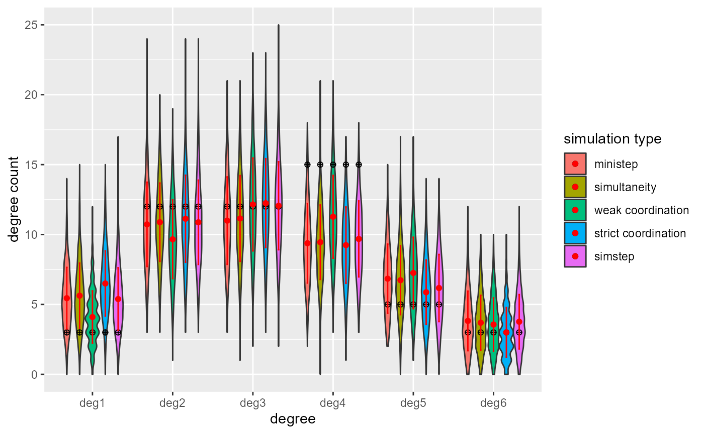
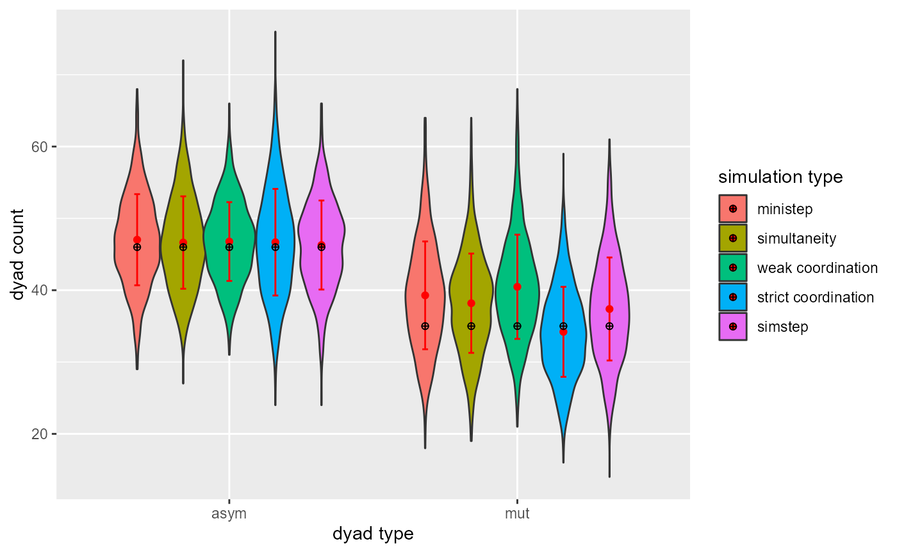

1. Getting started
1.1. Basic functions
fsave <- function(x, file, location = "./data/processed/", ...) {
if (!dir.exists(location))
dir.create(location)
datename <- substr(gsub("[:-]", "", Sys.time()), 1, 8)
totalname <- paste(location, datename, file, sep = "")
print(paste("SAVED: ", totalname, sep = ""))
save(x, file = totalname)
}
fpackage.check <- function(packages) {
lapply(packages, FUN = function(x) {
if (!require(x, character.only = TRUE)) {
install.packages(x, dependencies = TRUE)
library(x, character.only = TRUE)
}
})
}
colorize <- function(x, color) {
sprintf("<span style='color: %s;'>%s</span>", color, x)
}
fshowdf <- function(x, ...) {
knitr::kable(x, digits = 3, "html", ...) %>%
kableExtra::kable_styling(bootstrap_options = c("striped", "hover")) %>%
kableExtra::scroll_box(width = "100%", height = "600px")
}1.2. Packages
packages = c("RsienaTwoStep", "RSiena", "doParallel", "compiler", "ggplot2", "tidyverse", "kableExtra")
fpackage.check(packages)2. Setting up cluster
no_cores <- detectCores()
mycl <- makeCluster(rep("localhost", no_cores))
clusterEvalQ(mycl, library(RsienaTwoStep))
clusterEvalQ(mycl, library("network"))
clusterEvalQ(mycl, library("RSiena"))
clusterEvalQ(mycl, library("sna"))
registerDoParallel(mycl)
#stopCluster(cl = mycl)
#perhaps this is better (backend independent):
# library(doFuture)
# doFuture::registerDoFuture()
# future::plan("multisession", workers = detectCores() - 1)
## Explicitly close multisession workers by switching plan
# plan(sequential)3. Running Siena07()
3.1. Prepare the dataset
mynet <- sienaDependent(array(c(s501, s502), dim=c(50, 50, 2)))
alcohol <- s50a
smoke <- s50s
smoke <- coCovar(smoke[, 1])
alcohol <- coCovar(alcohol[, 1])
mydata <- sienaDataCreate(mynet, smoke, alcohol)3.2. Set up up the algorithm.
Set conditional to FALSE, this way we estimate the rate
parameter and I will be able to retrieve the rate parameter estimate in
theta. Also set ‘findiff’ to TRUE. In
RsienaTwoStep the estimates of derivatives (phase1 and
phase3) are estimated using finite differences.
myalgorithm <- sienaAlgorithmCreate(cond = FALSE, findiff = TRUE, projname=NULL) 3.3. Define the model
myeff <- getEffects(mydata)
myeff <- includeEffects(myeff, cycle3, transTrip)
#> effectName include fix test initialValue parm
#> 1 transitive triplets TRUE FALSE FALSE 0 0
#> 2 3-cycles TRUE FALSE FALSE 0 0
myeff <- includeEffects(myeff, egoX, altX, egoXaltX, interaction1 = "alcohol")
#> effectName include fix test initialValue parm
#> 1 alcohol alter TRUE FALSE FALSE 0 0
#> 2 alcohol ego TRUE FALSE FALSE 0 0
#> 3 alcohol ego x alcohol alter TRUE FALSE FALSE 0 0
myeff <- includeEffects(myeff, simX, interaction1 = "smoke")
#> effectName include fix test initialValue parm
#> 1 smoke similarity TRUE FALSE FALSE 0 03.4. Estimate the model.
ans3 <- siena07(myalgorithm, data=mydata, effects=myeff, batch=TRUE, returnDeps = TRUE)
fsave(ans3, file="ans3.Rdata")let’s have a look
ans3
#> Estimates, standard errors and convergence t-ratios
#>
#> Estimate Standard Convergence
#> Error t-ratio
#> 1. rate basic rate parameter mynet 6.2300 ( 1.0066 ) 0.0453
#> 2. eval outdegree (density) -2.5205 ( 0.1434 ) 0.0172
#> 3. eval reciprocity 2.0461 ( 0.2817 ) -0.0042
#> 4. eval transitive triplets 0.5426 ( 0.1728 ) 0.0046
#> 5. eval 3-cycles 0.0580 ( 0.3165 ) 0.0103
#> 6. eval smoke similarity 0.4123 ( 0.2805 ) -0.0141
#> 7. eval alcohol alter -0.0692 ( 0.0944 ) 0.0433
#> 8. eval alcohol ego 0.0382 ( 0.0932 ) 0.0488
#> 9. eval alcohol ego x alcohol alter 0.0994 ( 0.0750 ) -0.0073
#>
#> Overall maximum convergence ratio: 0.0979
#>
#>
#> Total of 2695 iteration steps.4. Estimate via RsienaTwoStep
First we will demonstrate that we can estimate the same model without
using siena07().
4.1. Prepare the dataset
DF <- data.frame(alcohol = s50a[, 1], smoke = s50s[, 1])No need to set up an algorithm.
4.2. Define the model.
Include all names of the statistics in a list. The aim is to use the shortname of these effects as listed in the RSiena model with a prefix “ts_” added to them. If the statistic requires a covariate use a list with the first element the name of the statistic and the second element the name of the covariate. This should be the same name as used in your dataset.
STATS <- list(ts_degree,
ts_recip,
ts_transTrip,
ts_cycle3,
list(ts_simX, "smoke"),
list(ts_altX, "alcohol"),
list(ts_egoX, "alcohol"),
list(ts_egoXaltX, "alcohol"))4.2.1. Check statistics
As a brief intermezzo, check if the statistics are programmed correctly by comparing the target values.
t1 <- ts_targets(ans3) #target values calculated by `siena07()`
t2 <- ts_targets(mydata=mydata, myeff=myeff) #target values calculated by RsienaTwoStep based on RSiena objects.
t3 <- ts_targets(net1 = s501, net2 = s502, statistics = STATS, ccovar = DF) #target values calculated by RsienaTwoStep based on RsienaTwoStep objects.
df <- data.frame(Siena_original = t1, ts_siena_objects = t2, ts_twostep_object = t3 )
rownames(df) <- names(t3)
fshowdf(df)| Siena_original | ts_siena_objects | ts_twostep_object | |
|---|---|---|---|
| Rate | 115.000 | 115.000 | 115.000 |
| degree | 116.000 | 116.000 | 116.000 |
| recip | 70.000 | 70.000 | 70.000 |
| transTrip | 88.000 | 88.000 | 88.000 |
| cycle3 | 28.000 | 28.000 | 28.000 |
| simX smoke | 13.842 | 13.842 | 13.842 |
| altX alcohol | -4.080 | -4.080 | -4.080 |
| egoX alcohol | 2.920 | 2.920 | 2.920 |
| egoXaltX alcohol | 62.190 | 62.190 | 62.190 |
Everything is fine.
4.3. Estimate model
4.3.1. Estimate parameters.
We could estimate the parameters and the SE separately. This means we
need to set phase3 to FALSE.
ts_ans1a <- ts_estim(net1 = s501, net2= s502, statistics = STATS, ccovar = DF, parallel = TRUE, phase3 = FALSE)We could also start with the data objects of RSiena. Note that we still perform phase1 ourselves.
ts_ans1b <- ts_estim(mydata = mydata, myeff = myeff, parallel = TRUE, phase3 = FALSE)We could also start with the result of an
RSiena::siena07() estimation. We now use the final
estimates as our starting values and as phase1 the results of phase3 as
stored in ans. This is (more or less) similar as to using prevAns in
RSiena.
ts_ans1c <- ts_estim(ans = ans3, phase3 = FALSE, parallel = TRUE)4.3.2. check convergence visually
let’s have a look if parameters converged.
df <- data.frame(ts_ans1c)
vars <- colnames(df)
df$ite <- 1:nrow(ts_ans1c)
#convert data from wide to long format
df <- df %>% pivot_longer(cols= all_of(vars),
names_to='statistic',
values_to='estimate')
ggplot(df, aes(x=ite, y=estimate)) +
geom_line(aes(color=statistic))
Let us zoom in a little on transTrip
df <- data.frame(ts_ans1c)
vars <- colnames(df)
df$ite <- 1:nrow(ts_ans1c)
#convert data from wide to long format
df <- df %>% pivot_longer(cols= vars[c(4)],
names_to='statistic',
values_to='estimate')
ggplot(df, aes(x=ite, y=estimate)) +
geom_line(aes(color=statistic))
And on the last 250 iterations or so.
df <- data.frame(ts_ans1c)
vars <- colnames(df)
df$ite <- 1:nrow(ts_ans1c)
#convert data from wide to long format
df <- df[750:1000,] %>% pivot_longer(cols= vars[c(4)],
names_to='statistic',
values_to='estimate')
ggplot(df, aes(x=ite, y=estimate)) +
geom_line(aes(color=statistic))
Well, what do you make out of this? If the lines keep oscillating
around a specific value, try to increase the b parameter.
Conversely, if the lines did not converge but you see no oscillation you
could decrease the b parameter. In this case, I think we
should/could increase b each 250 iterations or so.
You could also try to re-estimate the model with different starting values.
I like to inspect the results of the Robbins Monro algorithm in this way, before I go to phase3 because phase3 takes up quite some time.
4.4 final results
Let us have a look at the final results.
SE <- sqrt(diag(ans1c_phase3$covtheta))
tstat <- ans1c_phase3$tstat
tconv.max <- ans1c_phase3$tconv.max
df <- data.frame(estim = ESTIM, SE = SE, "tratio" = tstat)
knitr::kable(df, digits = 3, "html", escape=FALSE, col.names = c("Estimate", "Standard <br> Error", "Convergence <br> t-ratio")) %>%
kableExtra::kable_styling(bootstrap_options = c("striped", "hover")) %>%
kableExtra::scroll_box(width = "100%", height = "500px") %>%
kableExtra::footnote(general = paste("tconv.max:", round(tconv.max, 3), sep=" "))| Estimate |
Standard Error |
Convergence t-ratio |
|
|---|---|---|---|
| Rate | 6.230 | 0.963 | 0.016 |
| degree | -2.521 | 0.138 | 0.074 |
| recip | 2.046 | 0.243 | 0.099 |
| transTrip | 0.543 | 0.150 | 0.097 |
| cycle3 | 0.058 | 0.423 | 0.103 |
| simX smoke | 0.412 | 0.321 | 0.132 |
| altX alcohol | -0.069 | 0.108 | -0.093 |
| egoX alcohol | 0.038 | 0.094 | -0.114 |
| egoXaltX alcohol | 0.099 | 0.074 | -0.030 |
| Note: | |||
| tconv.max: 0.185 |
My conclusion is that with RSienatwostep we can properly
estimate a (very simple) network evolution model using the common
ministep assumption. Good job!
5. Compare the estimates of the different twostep models
With different models I mean models with the same statistics but using different assumptions with respect to the theory of (inter)action.
I also think this is a nice workflow if we want to test robustness of ministep model:
- estimate ministep model (with SE, and fit statistics)
- estimate twostep models (phase2 only)
- simultaneity
- strict coordination
- weak coordination
- simstep
- simultaneity
- visually check model convergence
- see if twostep models lead to (substantially) different
estimates
- if so, estimate phase3 of these models (and fit statistics) and
compare final models
- Compare GOF
5.1. estimate ministep model
We already did this above of course. But hey,..
5.1.1. via RSiena
#Step 1. prepare dataset
mynet <- sienaDependent(array(c(s501, s502), dim=c(50, 50, 2)))
alcohol <- s50a
smoke <- s50s
smoke <- coCovar(smoke[, 1])
alcohol <- coCovar(alcohol[, 1])
mydata <- sienaDataCreate(mynet, smoke, alcohol)
# Step 2. algorithm
myalgorithm <- sienaAlgorithmCreate(cond = FALSE, findiff = TRUE, projname=NULL)
# Step 3. Define the model
myeff <- getEffects(mydata)
myeff <- includeEffects(myeff, cycle3, transTrip)
myeff <- includeEffects(myeff, egoX, altX, egoXaltX, interaction1 = "alcohol")
myeff <- includeEffects(myeff, simX, interaction1 = "smoke")
# Step 4. Estimate the model.
ans3 <- siena07(myalgorithm, data=mydata, effects=myeff, batch=TRUE, returnDeps = TRUE)5.1.2. via RsienaTwoStep
#Step 1. prepare dataset
DF <- data.frame(alcohol = s50a[, 1], smoke = s50s[, 1])
#Step 2. define the model
STATS <- list(ts_degree,
ts_recip,
ts_transTrip,
ts_cycle3,
list(ts_simX, "smoke"),
list(ts_altX, "alcohol"),
list(ts_egoX, "alcohol"),
list(ts_egoXaltX, "alcohol"))
#Step 3. estimate Ministep model (default)
ts_ansMS <- ts_estim(net1 = s501, net2= s502, statistics = STATS, ccovar = DF, parallel = TRUE)5.2. Estimate twostep models
5.2.1. phase2
We will use the ans of ’RSiena07()` as our input. We only estimate phase2. The goal is not so much to come to a perfect estimate but to check if the estimates are within the CI of the original estimates of RSiena. Only if this would not be the case, there may be a need to estimate the model by using different assumptions.
### simultaneity
ts_ansS <- ts_estim(ans = ans3, nite = 250, conv = 0.01, parallel = TRUE, phase3 = FALSE, p2step = c(0,1,0))
fsave(ts_ansS, "ts_ansS.rda")
### weak coordination
ts_ansWC <- ts_estim(ans = ans3, nite = 250, conv = 0.01, parallel = TRUE, phase3 = FALSE, p2step = c(0,1,0), dist1 = 2, dist2 = 2, modet1 = "degree", modet2 = "degree")
fsave(ts_ansWC, "ts_ansWC.rda")
### strict coordination
ts_ansSC <- ts_estim(ans = ans3, nite = 250, conv = 0.01, parallel = TRUE, phase3 = FALSE, p2step = c(0,1,0), dist1 = 2, modet1 = "degree" )
fsave(ts_ansSC, "ts_ansSC.rda")
### simstep
ts_ansST <- ts_estim(ans = ans3, nite = 250, conv = 0.01, parallel = TRUE, phase3 = FALSE, p2step = c(0,0,1))
fsave(ts_ansST, "ts_ansST.rda")5.3. check convergence visually
We see that weak coordination, strict coordination and simstep stopped after the maximum of 250 iterations. Thus, for these models it takes (a bit) longer to reach convergence. We also observe more wobbly lines. But all in all, not too bad?
5.3.1. simultaneity
ts_ans <- ts_ansS
df <- data.frame(ts_ans)
vars <- colnames(df)
df$ite <- 1:nrow(ts_ans)
#convert data from wide to long format
df <- df %>% pivot_longer(cols= vars,
names_to='statistic',
values_to='estimate')
ggplot(df, aes(x=ite, y=estimate)) +
geom_line(aes(color=statistic))
### 5.3.2. weak coordination
ts_ans <- ts_ansWC
df <- data.frame(ts_ans)
vars <- colnames(df)
df$ite <- 1:nrow(ts_ans)
#convert data from wide to long format
df <- df %>% pivot_longer(cols= vars,
names_to='statistic',
values_to='estimate')
ggplot(df, aes(x=ite, y=estimate)) +
geom_line(aes(color=statistic))
### 5.3.3. strict coordination
ts_ans <- ts_ansSC
df <- data.frame(ts_ans)
vars <- colnames(df)
df$ite <- 1:nrow(ts_ans)
#convert data from wide to long format
df <- df %>% pivot_longer(cols= vars,
names_to='statistic',
values_to='estimate')
ggplot(df, aes(x=ite, y=estimate)) +
geom_line(aes(color=statistic))
### 5.3.4. simstep
ts_ans <- ts_ansST
df <- data.frame(ts_ans)
vars <- colnames(df)
df$ite <- 1:nrow(ts_ans)
#convert data from wide to long format
df <- df %>% pivot_longer(cols= vars,
names_to='statistic',
values_to='estimate')
ggplot(df, aes(x=ite, y=estimate)) +
geom_line(aes(color=statistic))
5.4. Compare estimates
#CI of RSiena
down <- ans3$theta - 1.96 * sqrt(diag(ans3$covtheta))
up <- ans3$theta + 1.96 * sqrt(diag(ans3$covtheta))
#our statistics
stats <- factor(vars, levels = vars)
#final estimates
b_s <- ts_ansS[nrow(ts_ansS),]
b_sc <- ts_ansSC[nrow(ts_ansSC),]
b_wc <- ts_ansWC[nrow(ts_ansWC),]
b_st <- ts_ansST[nrow(ts_ansST),]
#put everything in a dataframe
my.dt <- data.frame(statistics = stats, estimate=ans3$theta, down=down, up=up, b_s=b_s, b_sc=b_sc, b_wc=b_wc, b_st=b_st)
#use different layers to plot the separate estimates. and include a manual legend.
ggplot(my.dt, aes(x=statistics, y=estimate)) +
geom_point(size = 3, aes(color="ministep")) +
geom_errorbar(aes(ymin = down, ymax = up, color="ministep")) +
geom_point(size = 3, alpha = 0.5, aes(x=stats, y=b_s, color="simultaneity" )) +
geom_point(size = 3, alpha = 0.5, aes(x=stats, y=b_sc , color="strict coordination")) +
geom_point(size = 3, alpha = 0.5, aes(x=stats, y=b_wc, color="weak coordination")) +
geom_point(size = 3, alpha = 0.5, aes(x=stats, y=b_st, color="simstep")) +
scale_color_manual(name= "Estimation type",
breaks = c("ministep", "simultaneity", "strict coordination", "weak coordination", "simstep"),
values = c("ministep"= "black", "simultaneity" = "red", "strict coordination" = "blue", "weak coordination" = "green", "simstep" = "orange")) +
scale_x_discrete(guide = guide_axis(n.dodge = 2)) +
scale_y_continuous(n.breaks=10)
This figure already tells us that our twostep model more or less
leads to similar estimates. There are some notably exceptions,
however.
Weak coordination: much smaller degree estimate, much larger reciprocity estimate and larger transTrip estimate. This is not that strange since that under weak coordination the two alters have to be connected either at the beginning of the twostep or after the twostep.
5.5. phase3 for all twostep models
Please note, this can take a long time (more than a week), even with
the relatively low itef3 default value of 100 in
ts_phase3().
b_s <- ts_ansS[nrow(ts_ansS),]
b_sc <- ts_ansSC[nrow(ts_ansSC),]
b_wc <- ts_ansWC[nrow(ts_ansWC),]
b_st <- ts_ansST[nrow(ts_ansST),]
### simultaneity
ts_ansSp3 <- ts_phase3(mydata = mydata, myeff = myeff, startvalues = b_s, parallel = TRUE, returnDeps = TRUE, p2step = c(0,1,0))
fsave(ts_ansSp3, "ts_ansSp3.rda")
### weak coordination
ts_ansWCp3 <- ts_phase3(mydata = mydata, myeff = myeff, startvalues = b_wc, parallel = TRUE, returnDeps = TRUE, p2step = c(0,1,0), dist1 = 2, dist2 = 2, modet1 = "degree", modet2 = "degree")
fsave(ts_ansWCp3, "ts_ansWCp3.rda")
### strict coordination
ts_ansSCp3 <- ts_phase3(mydata = mydata, myeff = myeff, startvalues = b_sc, parallel = TRUE, returnDeps = TRUE, p2step = c(0,1,0), dist1 = 2, modet1 = "degree")
fsave(ts_ansSCp3, "ts_ansSCp3.rda")
### simstep
ts_ansSTp3 <- ts_phase3(mydata = mydata, myeff = myeff, startvalues = b_st, parallel = TRUE, returnDeps = TRUE, p2step = c(0,0,1))
fsave(ts_ansSTp3, "ts_ansSTp3.rda")5.5.1 final results!
We conclude that all five different theories of interaction lead to similar conclusions with respect to significance of included statistics.
estim_MS <- ans3$theta
SE_MS <- sqrt(diag(ans3$covtheta))
tstat_MS <- ans3$tconv
tconv.max_MS <- ans3$tconv.max
estim_S <- ts_ansSp3$estim
SE_S <- sqrt(diag(ts_ansSp3$covtheta))
tstat_S <- ts_ansSp3$tstat
tconv.max_S <- ts_ansSp3$tconv.max
estim_WC <- ts_ansWCp3$estim
SE_WC <- sqrt(diag(ts_ansWCp3$covtheta))
tstat_WC <- ts_ansWCp3$tstat
tconv.max_WC <- ts_ansWCp3$tconv.max
estim_SC <- ts_ansSCp3$estim
SE_SC <- sqrt(diag(ts_ansSCp3$covtheta))
tstat_SC <- ts_ansSCp3$tstat
tconv.max_SC <- ts_ansSCp3$tconv.max
estim_ST <- ts_ansSTp3$estim
SE_ST <- sqrt(diag(ts_ansSTp3$covtheta))
tstat_ST <- ts_ansSTp3$tstat
tconv.max_ST <- ts_ansSTp3$tconv.max
df <- data.frame(estim_MS = estim_MS, SE_MS = SE_MS, tstat_MS = tstat_MS,
estim_S = estim_S, SE_S = SE_S, tstat_S = tstat_S,
estim_WC = estim_WC, SE_WC = SE_WC, tstat_WC = tstat_WC,
estim_SC = estim_SC, SE_SC = SE_SC, tstat_SC = tstat_SC,
estim_ST = estim_ST, SE_ST = SE_ST, tstat_ST = tstat_ST)
results <- knitr::kable(df, digits = 3, "html",
col.names = rep(c("Estim", "SE", "tstat"), 5)) %>%
kableExtra::add_header_above(c(" ", "ministep$^a$" = 3, "simultaneity$^b$" = 3, "weak coordination$^c$" = 3, "strict coordination$^d$" = 3, "simstep$^e$" = 3)) %>%
kableExtra::kable_styling(bootstrap_options = c("striped", "hover")) %>%
kableExtra::add_footnote(c(paste("tconv.max:", round(tconv.max_MS, 3), sep=" "),
paste("tconv.max:", round(tconv.max_S, 3), sep=" "),
paste("tconv.max:", round(tconv.max_WC, 3), sep=" "),
paste("tconv.max:", round(tconv.max_SC, 3), sep=" "),
paste("tconv.max:", round(tconv.max_ST, 3), sep=" ")
), notation="alphabet") %>%
kableExtra::scroll_box(width = "100%", height = "500px")
results| Estim | SE | tstat | Estim | SE | tstat | Estim | SE | tstat | Estim | SE | tstat | Estim | SE | tstat | |
|---|---|---|---|---|---|---|---|---|---|---|---|---|---|---|---|
| rate | 6.230 | 1.007 | 0.045 | 6.002 | 0.923 | -0.062 | 6.852 | 1.284 | -0.003 | 5.805 | 0.941 | -0.339 | 5.560 | 0.875 | -0.126 |
| degree | -2.521 | 0.143 | 0.017 | -2.523 | 0.124 | -0.092 | -4.560 | 0.725 | 0.551 | -2.266 | 0.124 | -0.717 | -3.058 | 0.215 | -0.235 |
| recip | 2.046 | 0.282 | -0.004 | 2.014 | 0.252 | -0.097 | 3.205 | 0.567 | 0.466 | 1.666 | 0.265 | -0.717 | 2.575 | 0.395 | -0.233 |
| transTrip | 0.543 | 0.173 | 0.005 | 0.525 | 0.136 | -0.125 | 0.963 | 0.285 | 0.354 | 0.369 | 0.116 | -1.015 | 0.659 | 0.135 | -0.256 |
| cycle3 | 0.058 | 0.316 | 0.010 | 0.049 | 0.297 | -0.114 | 0.285 | 0.598 | 0.373 | 0.052 | 0.256 | -0.986 | -0.027 | 0.439 | -0.247 |
| simX smoke | 0.412 | 0.281 | -0.014 | 0.387 | 0.365 | -0.113 | 0.655 | 0.477 | 0.128 | 0.375 | 0.277 | -0.362 | 0.544 | 0.395 | -0.117 |
| altX alcohol | -0.069 | 0.094 | 0.043 | -0.069 | 0.105 | 0.153 | -0.100 | 0.134 | 0.149 | -0.070 | 0.094 | 0.041 | -0.086 | 0.121 | 0.015 |
| egoX alcohol | 0.038 | 0.093 | 0.049 | 0.044 | 0.108 | 0.131 | 0.034 | 0.141 | 0.108 | 0.049 | 0.079 | 0.021 | 0.074 | 0.128 | 0.026 |
| egoXaltX alcohol | 0.099 | 0.075 | -0.007 | 0.098 | 0.077 | -0.118 | 0.113 | 0.112 | 0.341 | 0.090 | 0.064 | -0.222 | 0.134 | 0.089 | -0.071 |
| a tconv.max: 0.098 | |||||||||||||||
| b tconv.max: 0.251 | |||||||||||||||
| c tconv.max: 0.746 | |||||||||||||||
| d tconv.max: 1.072 | |||||||||||||||
| e tconv.max: 0.282 |
#kableExtra::save_kable(results, "./data/processed/results.html")5.6. GOF
Overal conclusion:
- for this data and this model specification (i.e. included
statistics)
- ministep and simultaneity are more or less identical
- differences between the different theories of interaction are
small
- simstep seems to be the best overal performance
- ministep and simultaneity are more or less identical
5.6.1 GOF - degree distribution
df_tsMS <- ts_degreecount(sims=ans1c_phase3$simnets, simtype="ministep")
df_tsS <- ts_degreecount(sims=ts_ansSp3$simnets, simtype="simultaneity")
df_tsWC <- ts_degreecount(sims=ts_ansWCp3$simnets, simtype="weak coordination")
df_tsSC <- ts_degreecount(sims=ts_ansSCp3$simnets, simtype="strict coordination")
df_tsST <- ts_degreecount(sims=ts_ansSTp3$simnets, simtype="simstep")
#targets
df_target <- ts_degreecount(list(s502), simtype="target")
df_target <- df_target[,c("x", "y")]
names(df_target)[2] <- "target"
df <- rbind(df_tsMS, df_tsS, df_tsWC, df_tsSC, df_tsST)
df <- left_join(df, df_target)
#focus in degree until 6
df_sel <- df[df$x=="deg1" | df$x=="deg2" | df$x=="deg3"| df$x=="deg4"| df$x=="deg5"| df$x=="deg6",]
p <- ggplot(df_sel, aes(x=x, y=y, fill=factor(type, levels=c("ministep", "simultaneity", "weak coordination", "strict coordination", "simstep"))) ) +
geom_violin(position=position_dodge(.8)) +
stat_summary( aes(x=x, y=target, fill=factor(type, levels=c("ministep", "simultaneity", "weak coordination", "strict coordination", "simstep"))), fun = mean,
geom = "point",
color="black", shape=10, position=position_dodge(.8)) +
stat_summary(fun = mean,
geom = "errorbar",
fun.max = function(x) mean(x) + sd(x),
fun.min = function(x) mean(x) - sd(x),
width=.1,
color="red", position=position_dodge(.8)) +
stat_summary(fun = mean,
geom = "point",
color="red", position=position_dodge(.8)) +
labs(x = "degree", y = "degree count", fill="simulation type")
p
Interesting!!
Some tentative conclusions:
- no difference between simultaneity and ministep
- weak coordination is best for degree 1 and degree 4. At higher degrees (5 and 6) is strict coordination the best.
- simstep is either just as good as ministep or outperforms ministep
5.6.2. GOF - dyad census
df_tsMS <- ts_dyads(sims=ans1c_phase3$simnets, simtype="ministep")
df_tsS <- ts_dyads(sims=ts_ansSp3$simnets, simtype="simultaneity")
df_tsWC <- ts_dyads(sims=ts_ansWCp3$simnets, simtype="weak coordination")
df_tsSC <- ts_dyads(sims=ts_ansSCp3$simnets, simtype="strict coordination")
df_tsST <- ts_dyads(sims=ts_ansSTp3$simnets, simtype="simstep")
#targets
df_target <- ts_dyads(list(s502), simtype="target")
df_target <- df_target[,c("x", "y")]
names(df_target)[2] <- "target"
df <- rbind(df_tsMS, df_tsS, df_tsWC, df_tsSC, df_tsST)
df <- left_join(df, df_target)
df_sel <- df[df$x=="asym" | df$x=="mut" ,]
p <- ggplot(df_sel, aes(x=x, y=y, fill=factor(type, levels=c("ministep", "simultaneity", "weak coordination", "strict coordination", "simstep"))) ) +
geom_violin(position=position_dodge(.8)) +
stat_summary(fun = mean,
geom = "errorbar",
fun.max = function(x) mean(x) + sd(x),
fun.min = function(x) mean(x) - sd(x),
width=.1,
color="red", position=position_dodge(.8)) +
stat_summary(fun = mean,
geom = "point",
color="red", position=position_dodge(.8)) +
stat_summary( aes(x=x, y=target, fill=factor(type, levels=c("ministep", "simultaneity", "weak coordination", "strict coordination", "simstep"))), fun = mean,
geom = "point",
color="black", shape=10, position=position_dodge(.8)) +
labs(x = "dyad type", y = "dyad count", fill="simulation type")
p
Conclusion:
- strict coordination seems to be the winner.
- simstep is outperforming ministep.
5.6.3. GOF - triad census
df_tsMS <- ts_triads(sims=ans1c_phase3$simnets, simtype="ministep")
df_tsS <- ts_triads(sims=ts_ansSp3$simnets, simtype="simultaneity")
df_tsWC <- ts_triads(sims=ts_ansWCp3$simnets, simtype="weak coordination")
df_tsSC <- ts_triads(sims=ts_ansSCp3$simnets, simtype="strict coordination")
df_tsST <- ts_triads(sims=ts_ansSTp3$simnets, simtype="simstep")
#targets
df_target <- ts_triads(list(s502), simtype="target")
df_target <- df_target[,c("x", "y")]
names(df_target)[2] <- "target"
df <- rbind(df_tsMS, df_tsS, df_tsWC, df_tsSC, df_tsST)
df <- left_join(df, df_target)
#> Joining with `by = join_by(x)`
df_sel <- df[df$x=="021D" | df$x=="021U" | df$x=="021C",]
p <- ggplot(df_sel, aes(x=x, y=y, fill=factor(type, levels=c("ministep", "simultaneity", "weak coordination", "strict coordination", "simstep"))) ) +
geom_violin(position=position_dodge(.8)) +
stat_summary(fun = mean,
geom = "errorbar",
fun.max = function(x) mean(x) + sd(x),
fun.min = function(x) mean(x) - sd(x),
width=.1,
color="red", position=position_dodge(.8)) +
stat_summary(fun = mean,
geom = "point",
color="red", position=position_dodge(.8)) +
stat_summary( aes(x=x, y=target, fill=factor(type, levels=c("ministep", "simultaneity", "weak coordination", "strict coordination", "simstep"))), fun = mean,
geom = "point",
color="black", shape=10, position=position_dodge(.8)) +
labs(x = "triad type", y = "triad count", fill="simulation type")
p
Conclusion:
- strict coordination seems to be the winner.
- simstep is not outperforming ministep for triad configurations.
5.6.4. GOF - smoke segregation
df_tsMS <- ts_nacf(sims=ans1c_phase3$simnets, simtype="ministep", cov=DF$smoke)
df_tsS <- ts_nacf(sims=ts_ansSp3$simnets, simtype="simultaneity", cov=DF$smoke)
df_tsWC <- ts_nacf(sims=ts_ansWCp3$simnets, simtype="weak coordination", cov=DF$smoke)
df_tsSC <- ts_nacf(sims=ts_ansSCp3$simnets, simtype="strict coordination", cov=DF$smoke)
df_tsST <- ts_nacf(sims=ts_ansSTp3$simnets, simtype="simstep", cov=DF$smoke)
#targets
df_target <- ts_nacf(list(s502), simtype="target", cov=DF$smoke)
names(df_target)[1] <- "target"
df <- rbind(df_tsMS, df_tsS, df_tsWC, df_tsSC, df_tsST)
names(df)[1] <- "MoranI"
df$target <- df_target$target
p <- ggplot(df, aes(x=factor(type, levels=c("ministep", "simultaneity", "weak coordination", "strict coordination", "simstep")), y=MoranI, fill=factor(type, levels=c("ministep", "simultaneity", "weak coordination", "strict coordination", "simstep"))) ) +
geom_violin(position=position_dodge(.8)) +
stat_summary(fun = mean,
geom = "errorbar",
fun.max = function(x) mean(x) + sd(x),
fun.min = function(x) mean(x) - sd(x),
width=.1,
color="red", position=position_dodge(.8)) +
stat_summary(fun = mean,
geom = "point",
color="red", position=position_dodge(.8)) +
stat_summary( aes(x=factor(type, levels=c("ministep", "simultaneity", "weak coordination", "strict coordination", "simstep")), y=target, fill=factor(type, levels=c("ministep", "simultaneity", "weak coordination", "strict coordination", "simstep"))), fun = mean,
geom = "point",
color="black", shape=10, position=position_dodge(.8)) +
labs(x = "simulation type", y = "smoke segregation (MoranI)", fill="simulation type") +
scale_x_discrete(guide = guide_axis(n.dodge = 2))
p
Conclusion:
- weak and strict coordination are doing worst
6. Conclusion
RsienaTwoStep offers a workflow for assessing the extent to which the
ministep assumption is crucial. By crucial I mean that parameter
estimates and model fit depend on the chosen ‘micro theory of
interaction’.
In the above example, the assumption is not crucial. All theories of
interaction lead to similar conclusions with respect to the significance
of the included statistics and the GOF of the ministep and twostep
models are very similar. Perhaps the simstep models has the best
GOF.